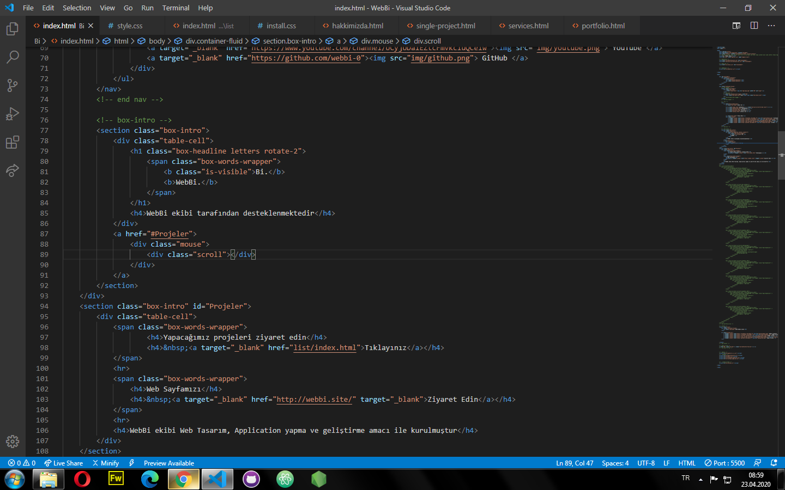

Bi | WebBi
WebBi tarafından destekenmektedir
AnaSayfa / Bilgi
Kullandığımız araçların hakkında bilgi verme amaçlı sayfadır
Hızlı menüler
- 1. Web Tasarım için kullandığımız araçlar
- 1.1 VS Code
- 1.2 GitHub
- 1.3 Atom
- 1.4 Google Chrome
- 1.5 Mzo
- 1.6 Change Subscribe Form Email
- 2. Files Used
- 2.1 CSS Files
- 2.2 Javascript Files
1. Web Tasarım için kullandığımız Yazılım ve araçlar
1.1 Visual Studio Code (VS Code)
Bu cod editöründe yazılan kodları iç içe yerleştirme renklendirme ve eklenti özelliği bulunmaktadır. Live Server eklentisini ekleyerek hersaferde kaydedilen dosyayı anlık olarak tarayıcada görüntüleyebiliyoruz.

1.2 GitHub
GitHub Masaüstü ve github.com üzerinden dosyalarımızı ekip arkadaşlarımızla paylaşabiliyoruz, Versionlandırma özelliği ile önceki versionda ne olmuş şimdi ne durumda olduğunu kod halinde bize sunuyor ve projeleri başka cihazlara indirebiliyor düzenliyip geri yükleyebiliyoruz
1.3 Atom
sd js/init.js asdasd asd asd.

1.4 Video Setup
Open js/init.js . Go to line 18 and change the youTubeVideoID variable.
1.5 Change background overlay color
Open index.html . Go to line 36 and for the solid-color div change the background color.
For the gradient color edit line 33 in the slideshow-gradient folder.
1.6 Change Subscribe Form Email
You have to edit the include/subscribe-process.php and change the $recipient variable value with your own email address.

2. Files Used
2.1 CSS Files
All CSS files, with the exception of the main CSS file (style.css) can be found in the theme's /css/ folder.
style.css - Main stylesheet and determines the majority of the templates styling.
bootstrap.css & bootstrap-responsive.css - The styles for the Twitter Bootstrap framework.
2.2 Javascript Files
Supersized - fullscreen slideshow.